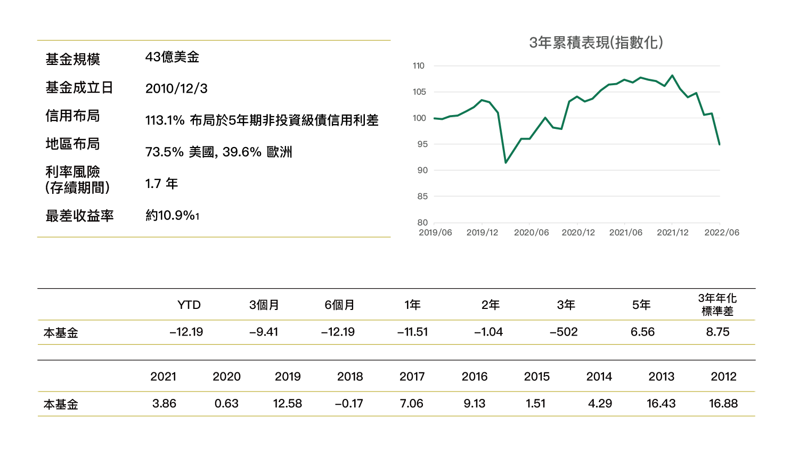
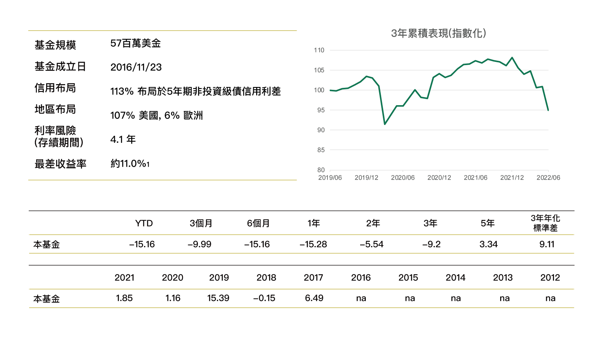

瑞聯UBAM全球增益策略債券基金(本基金主要係投資於非投資等級之高風險債券且配息來源可能為本金)

資料來源：Source(s):UBP. 1) Yield-to-Worst: spread + 12 month expected roll-down + interest rate yield Source(s):Lip. 2) the sub-fund was launched on 03.12.2010. Past performance is not a guide for current or future results. Data as 30.09.2021.per IM, 截至2022年6月30日,原幣績效, 台灣主基金..
資料來源：Source(s):UBP. 1) Yield-to-Worst: spread + 12 month expected roll-down + interest rate yield Source(s):Lip. 2) the sub-fund was launched on 03.12.2010. Past performance is not a guide for current or future results. Data as 30.09.2021.per IM, 截至2022年6月30日,原幣績效, 台灣主基金..

資料來源:UBP. 1) Yield-to-Worst: spread + 12 month expected roll-down + interest rate yield. Past performance is not a guide for current or future results. Data as 30.09.2021. Source(s):Lipper IM, 截至2022年6月30日,原幣績效, 台灣主基金.
資料來源:UBP. 1) Yield-to-Worst: spread + 12 month expected roll-down + interest rate yield. Past performance is not a guide for current or future results. Data as 30.09.2021. Source(s):Lipper IM, 截至2022年6月30日,原幣績效, 台灣主基金.